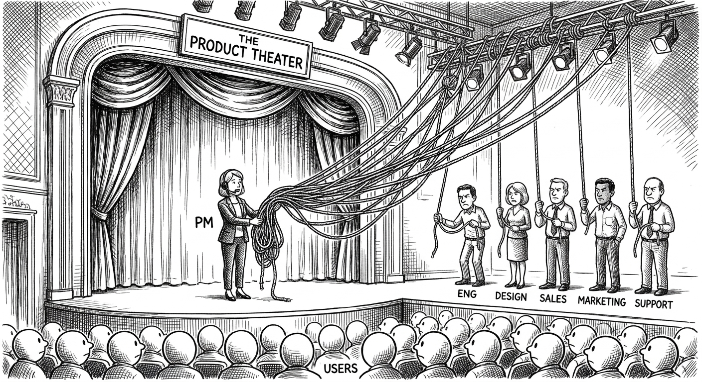
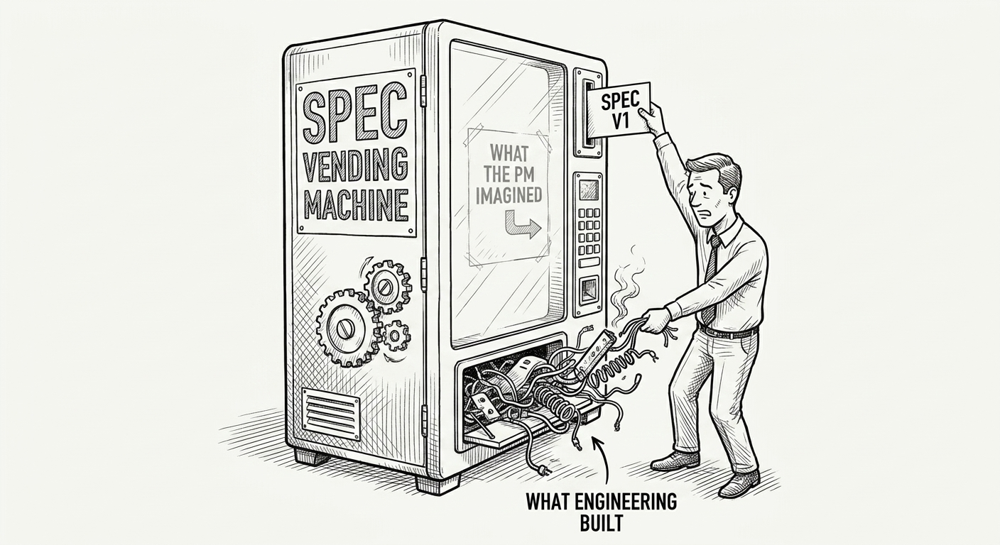
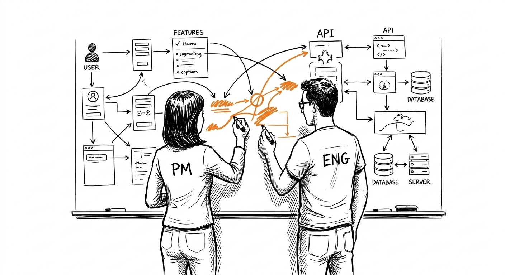
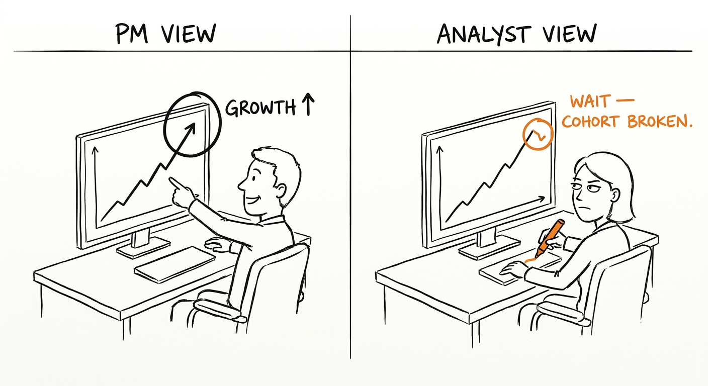
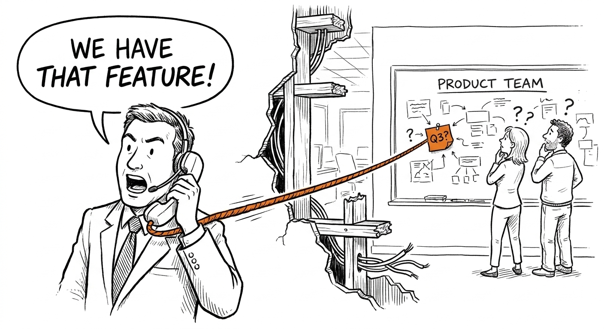

Capítulo 4. Los pares y el mapa de poder
No lanzas solo. Lanzas a través de personas.
Esa frase se repite en cada post de PM, en cada orientación de empleados nuevos, en cada programa de liderazgo. Se ha vuelto tan familiar que la gente la dice sin escucharla. Así que déjame decir lo que significa en realidad, en la práctica, un martes por la tarde cuando el sprint termina el viernes y todavía no tienes alineación con ingeniería sobre el alcance, diseño mandó tres direcciones contradictorias y ventas quiere una funcionalidad que tomará seis semanas construir para un trato que cierra en dos.
Significa que tu capacidad de lograr cualquier cosa es enteramente una función de tus relaciones con gente que no te reporta, que no te debe nada y que mide el éxito con métricas que no son tus métricas. Ese es el trabajo. Todo lo demás — los PRDs, los roadmaps, los OKRs, las revisiones trimestrales — es andamiaje alrededor de ese problema central.
La IA no cambió eso. Cambió quién tiene palanca, y dónde — y cambió más rápido que los organigramas. La mayoría de los equipos sigue corriendo patrones de colaboración de 2019 sobre tecnología de 2026. En esa brecha vive la fricción, y ahí es donde los PMs nuevos tienen más probabilidades de entrar confiados y salir confundidos.

Este capítulo es un mapa. No un organigrama — esos mienten sobre quién tiene el poder en realidad. Un mapa de las relaciones reales: cómo se ven cuando funcionan, qué las rompe y qué cambió específicamente la IA en cada una. Vamos a recorrer cinco: ingeniería, diseño, datos, GTM y la nueva capa organizacional nativa de IA que no existía hace cinco años y todavía no sabe qué es.
Entender a tus pares no es una habilidad blanda. Es un mapa estratégico de dónde se toman las decisiones, dónde se bloquean y dónde tu valor se compone o desaparece. Equivócate en esto y puedes tener la estrategia correcta, los datos correctos y el instinto correcto — y aun así no lanzar nada.
4.1 Ingeniería: de receptor de specs a co-decisor

El modelo viejo era simple, legible y casi completamente equivocado sobre cómo funciona la ingeniería en realidad. El PM escribe la spec. Ingeniería lee la spec. Ingeniería construye lo que dice la spec. El PM abre tickets cuando no coincide. Repetir.
Este modelo hacía sentir útiles a los PMs y hacía sentir a los ingenieros como tomadores de órdenes. Ambos grupos estaban descontentos, pero el descontento era tolerable porque la alternativa — dejar que los ingenieros decidieran qué construir — producía otros problemas. La spec era el tratado de paz negociado entre dos grupos con incentivos distintos. Era imperfecta, pero era legible.
La IA rompió ese modelo. Un ingeniero con Cursor o GitHub Copilot puede pasar de una idea vaga a un prototipo funcional en una tarde. La spec ya no es el documento de compuerta que era. Es la posición inicial de una conversación que empieza antes y termina distinto.
Cómo se ve el día a día ahora. En los equipos sanos de 2026, la relación PM-ingeniería es menos secuencial y más simultánea. El brief de producto sale el jueves. Para el viernes, dos ingenieros ya lo picotearon en sus editores. Para el standup del lunes, tienen preguntas que no anticipaste — no preguntas de «aclárame este caso borde», sino arquitectónicas. «Si lo construimos así, podemos reutilizar la infraestructura de pagos de la otra funcionalidad. Pero eso nos restringe a ciclos de facturación mensuales. ¿Mensual está bien?». Esa pregunta antes tardaba dos semanas en aflorar. Ahora aflora en setenta y dos horas, y tu respuesta moldea el diseño de maneras que el prototipo no puede deshacer fácilmente.
Esto es bueno, pero exige un PM distinto. El PM que se sentaba a esperar a que ingeniería «volviera con preguntas» ahora va detrás de una conversación que empezó sin él. El PM que está en la sala cuando se levanta el prototipo — aunque sea por Slack, aunque sea mirando una pantalla compartida — es el que atrapa el supuesto arquitectónico antes de que se convierta en deuda técnica.
Los modos de falla son específicos y vale la pena nombrarlos.
La máquina expendedora de specs. Es el PM que escribe un documento y da su trabajo por terminado. El documento entra a Jira. Ingeniería empieza a construir. Seis semanas después, lo que sale no coincide con lo que el PM tenía en la cabeza, porque lo que el PM tenía en la cabeza nunca estuvo completo en el documento. Esto siempre fue un problema. La IA lo aceleró: los ingenieros ahora construyen más rápido, así que la brecha entre lo que el PM imaginó y lo que ingeniería empezó a construir se abre antes y más ancha.
El arreglo no es una mejor spec. Es una conversación que ocurre antes de que la spec sea final, mientras los supuestos todavía son maleables. «Cuéntame qué estás pensando» vale más que «lee la sección 3.2». No porque documentar sea malo, sino porque la documentación es una foto del entendimiento en un momento, y el entendimiento necesita evolucionar.
El ingeniero como tomador de órdenes. Es el modo de falla inverso, y de hecho es más difícil de arreglar porque se siente como si las cosas funcionaran. El ingeniero lee la spec, hace preguntas aclaratorias, construye exactamente lo que se pidió. Nada está mal. Todo es mediocre. La funcionalidad sale, funciona y no mueve la métrica, porque el ingeniero que mejor entendía las restricciones técnicas nunca le dijo al PM que había una versión más simple que habría logrado el mismo resultado en la mitad del tiempo. Construyó lo que le dijeron.
Los buenos ingenieros tienen opiniones. Opiniones fuertes. Sobre arquitectura, sobre experiencia de usuario, sobre si la funcionalidad que pides es realmente la abstracción correcta para el problema que intentas resolver. El PM que trata esas opiniones como ruido por administrar se cortó el acceso a parte del mejor pensamiento de producto del equipo. Los ingenieros que más han lanzado suelen ser los que más duro rebatieron antes de construir.
La fricción diaria que en realidad es sana. Hay un tipo específico de fricción que los PMs nuevos malinterpretan como disfunción: el debate de estimaciones. Dimensionas algo en dos semanas. Ingeniería dice seis. Tú dices cuatro. Ingeniería dice cinco. Acuerdan cinco y ambos saben que tomará siete. Esto pasa constantemente y no es una falla. Es una negociación sobre la incertidumbre, y los PMs que no aprendieron a navegarla terminan o prometiendo de más al liderazgo o entregando de menos a los usuarios. La habilidad es saber qué batallas de alcance valen la pena — cuándo el cronograma del negocio restringe genuinamente el enfoque de ingeniería, versus cuándo estás apretando un cronograma por apariencias.
Parecido: «¿Por qué no podemos simplemente hacer X?». Esta pregunta, hecha por ingenieros sobre cosas aparentemente simples, es una de las señales más valiosas del proceso de desarrollo de producto. A veces la respuesta es «porque X viola una política de privacidad que no conocías». A veces la respuesta es «de hecho sí podemos hacer X, solo no lo había considerado». El PM que defiende su enfoque por reflejo en lugar de responder la pregunta de verdad se está perdiendo algo. A veces X es lo correcto. La única manera de saberlo es tomarse la pregunta en serio.
Cómo se ve lo excelente: co-decisión en la sala. Las versiones más claras de esto que he vivido fueron en contextos de producto de hardware — como Social Bicycles y Superpedestrian — donde el costo del bucle de decisión asíncrono estaba físicamente restringido. Las decisiones de firmware para hardware desplegado no se pueden iterar como las funcionalidades web — una actualización llega a unidades que ya están en la calle, y una mala decisión no crea deuda técnica, crea una flota comportándose mal en el mundo real. En ese entorno, el lead de ingeniería y yo tomábamos decisiones juntos en tiempo real, en la sala, con el mismo contexto — no porque tuviéramos un buen proceso, sino porque el costo del bucle asíncrono era demasiado alto para tolerarlo. Sin handoff, sin «déjame checar con mi equipo». Cuando dos personas tienen el mismo contexto en la misma sala, las decisiones ocurren en minutos en vez de días. Esa velocidad no es producto de un buen proceso. Es producto de un contexto compartido construido durante meses de trabajar el problema juntos.
Las restricciones del hardware fuerzan esta disciplina. El diseño cultural también puede producirla — y en Meta ya está ahí. Los leads de ingeniería llegan a las revisiones con opiniones, no con reportes de estado. Decisiones que en otro lado exigirían tres hilos de correo y un hueco de calendario se cierran en la sala, porque la gente tiene suficiente contexto compartido para debatir y aterrizar sin irse a verificar. Eso no es una propiedad de los individuos — es una propiedad de cómo se construyó la organización para moverse.
Lo que la IA hizo en las empresas construidas así es acelerar algo que ya funcionaba. La información que antes exigía una extracción de datos y un deck de seguimiento ahora se sintetiza en vivo. Un lead de ingeniería puede correr un query durante la conversación. Los resultados de los experimentos del trimestre pasado pueden aflorar mientras la discusión sigue abierta. El liderazgo puede interactuar con los datos reales a la misma velocidad que el equipo — lo que comprime la distancia entre «esto observamos» y «esto vamos a hacer al respecto». Las reuniones se acortan. Las decisiones salen más limpias. Incluso con liderazgo senior en la sala, el bucle se cierra más rápido que hace cinco años.
Esto no es universal. En Google — por lo que vi y por lo que describen colegas que siguen ahí — el bucle de decisión tiene más capas. No porque los ingenieros sean menos capaces, sino porque el proceso de revisión, los criterios de lanzamiento y la estructura de comités se construyeron para una escala que genuinamente los requiere. La minuciosidad sobre la velocidad es una elección deliberada de diseño — con costos reales de velocidad que se debaten internamente, porque las mismas estructuras que reducen los errores catastróficos también frenan el bucle de maneras que se componen. El trade-off es real en ambas direcciones. En Udacity, el talento de ingeniería era genuinamente fuerte — gente técnicamente rigurosa capaz de sostener el problema del cliente y el de arquitectura en el mismo marco — pero el diseño organizacional para la co-decisión en vivo no estaba: las decisiones viajaban hacia el liderazgo y bajaban de vuelta en lugar de cerrarse en la sala. Esa es una pregunta de estructura organizacional, no de cultura de ingeniería. Incluso en Superpedestrian, donde las apuestas del hardware creaban urgencia real, la fricción entre funciones solía frenar el bucle. La co-decisión con ingeniería funcionaba. La co-decisión entre funciones era más difícil.
El giro de la IA está ensanchando la brecha entre estas culturas, no angostándola. En las empresas donde la síntesis en vivo ya era la norma, la IA hace más rápida a toda la sala. En las empresas donde el proceso de decisión se construyó para la revisión cuidadosa, la IA acelera los insumos sin comprimir el bucle — el análisis que antes tomaba una semana ahora toma una tarde, pero igual tiene que pasar por las mismas compuertas. Que eso importe depende de qué estés construyendo y qué tan rápido se mueva tu mercado.
Llegar a ese estado exige una inversión que la mayoría de los PMs subestima. Necesitas entender lo suficiente de la arquitectura técnica para hacer preguntas útiles sin fingir ser ingeniero. Necesitas haber construido la confianza suficiente para que el lead de ingeniería no se cubra frente a ti. Necesitas haberte equivocado frente a ellos y haber cambiado de opinión, para que sepan que no te pones a la defensiva con tu spec anterior. Nada de eso pasa rápido. Todo se compone.
Cómo cambió la IA esta relación, en específico. Tres cosas se movieron.
Primero: el cronograma del prototipo. Antes tomaba semanas ver una versión funcional de una idea. Ahora toma días u horas. Es bueno porque los bucles de retroalimentación se apretaron. Es riesgoso porque los equipos ahora se comprometen con direcciones antes de darse cuenta, porque «lo prototipamos» se siente como validación aunque el prototipo solo demuestre que se puede construir, no que se deba.
Segundo: la pregunta cambió de «¿podemos construirlo?» a «¿deberíamos?». Suena sutil. No lo es. «¿Podemos construirlo?» es una pregunta con respuesta de ingeniería. «¿Deberíamos?» exige un juicio de producto del que el ingeniero, el PM, el diseñador y la persona de datos tienen cada uno una respuesta parcial. Cuando la IA volvió el «podemos» un sí casi siempre, la única pregunta interesante pasó a ser «deberíamos». Si tu relación PM-ingeniería sigue organizada alrededor de la primera pregunta, estás resolviendo el problema equivocado.
Tercero: los ingenieros están generando ideas a un ritmo que antes les pertenecía a los PMs. Un ingeniero con Claude puede redactar un one-pager sobre una funcionalidad nueva, con síntesis de investigación de usuarios y un encuadre de mercado, en unas horas. Esto no es una amenaza al rol de PM. Es una invitación a redefinir qué aportan realmente los PMs más allá del artefacto. Si tu valor era «yo genero las ideas de producto y las escribo», ese valor se comprimió. Si tu valor era «yo tengo el contexto, el juicio y las relaciones para elegir en cuáles ideas deberíamos invertir de verdad», ese valor se expandió. Sabe cuál de los dos eres.

El contexto según el tamaño de la empresa.
Startup (menos de 50): No hay «Ingeniería». Hay un CTO y dos más, y todos son PM en alguna esquina del producto. Tu valor no es escribir la spec. Es ser la persona que mata el 80% de lo que se prototipa antes de que se convierta en deuda técnica. Si te enamoras de cada demo, te conviertes en QA con una laptop más bonita. La palabra más importante del CTO es «no» y la tuya también — pero le dirán que no a cosas distintas, y la negociación entre tu no y el suyo es donde vive realmente la estrategia de producto.
Scale-up (50–500): Tienes engineering managers reales, roadmaps reales, tensión real entre trabajo de plataforma y trabajo de funcionalidades. La IA hace posible construir lo equivocado cinco veces más rápido. Tu defensa es el pre-mortem: «Si esto funciona exactamente como se diseñó, ¿qué se rompe? ¿Qué se frena? ¿Quién tiene que darle soporte durante dos años?». No escribes specs para arrancar trabajo. Las escribes para detener el trabajo malo. La spec es un mecanismo para matar, no para construir. Las mejores specs responden la pregunta: «Esto es todo lo que no vamos a construir en este sprint, y por esto».
A esta escala también empiezas a sentir la tensión plataforma-funcionalidades. Los ingenieros de funcionalidades quieren lanzar. Los de plataforma quieren hacerlo bien. Ambos tienen razón. El PM que toma partido pierde — el PM de funcionalidades que ignora la deuda de plataforma termina con un producto difícil de mantener; el PM de plataforma que ignora la velocidad de lanzamiento termina con una arquitectura hermosa que nadie usa. Navegar esa tensión es una habilidad central de PM y es más difícil de lo que parece, porque ningún lado está equivocado.
Megacorporación (5,000+): Ingeniería es una ciudad. Infra, plataforma, ML, integridad — todas organizaciones separadas, todas con estructuras de incentivos distintas. No convences a «Ingeniería». Convences a cuatro ingenieros Staff, dos directores y un TPM, cada uno con poder de veto y cada uno midiendo el éxito distinto. Tu ventaja es el contexto que ellos no tienen: qué dijo el CEO en el all-hands, qué encontró la revisión legal, qué significan realmente los datos de los últimos tres experimentos cuando los lees con cuidado. Un sistema de IA bien conectado en una empresa madura puede hacer aflorar parte de eso — transcripciones indexadas de all-hands, registros de revisión legal buscables. Pero no puede decirte cómo respondió el ingeniero Staff que necesitas convencer la última vez que se hizo este argumento, ni por qué los datos significan algo distinto de lo que aparentan si no estuviste en la sala cuando se diseñó el experimento. Tu ventaja es la interpretación, no el acceso.
A esta escala, el trabajo del PM es a menudo político de una manera que incomoda describir sin rodeos. Estás construyendo coaliciones. Estás asegurándote de que el roadmap del equipo de infra se superponga con el tuyo en el momento correcto. Estás garantizando que la revisión de seguridad no caiga la semana antes del lanzamiento. Estas no son habilidades de PM en el sentido de libro de texto. Son habilidades organizacionales que determinan si el trabajo técnicamente excelente llega a lanzarse, o si se queda en una cola detrás de algo que tenía mejor respaldo de coalición.
La prueba. Si un ingeniero lanzara tu funcionalidad sin ti, ¿los usuarios notarían la ausencia de tu participación? Si no, no estabas haciendo trabajo de PM. Estabas haciendo project management. El project management es valioso. No es lo que se les paga a los PMs en los niveles senior del oficio.
4.3 Datos: de guardián a co-intérprete

La vieja relación con datos estaba moldeada por la escasez. Los datos tardaban en llegar y tardaban en entenderse. Esperabas dos sprints por un dashboard. Hacías fila detrás de otros cuatro equipos por la atención del analista. La escasez, resulta, era algo útil: forzaba la priorización. No hacías doce preguntas. Hacías la única pregunta por la que valía la pena esperar. La disciplina la imponía el cuello de botella.
Ahora el cuello de botella no está. Le preguntas al modelo, tienes la gráfica en tres minutos, y para el mediodía tienes diez veces más preguntas. La abundancia está volviendo descuidados a todos, de maneras invisibles hasta que dejan de serlo — hasta que alguien presenta un número en una revisión ejecutiva que no resiste el escrutinio, o toma una decisión de producto basada en una métrica que medía algo ligeramente distinto de lo que creía.
Qué necesita entender realmente un PM sobre datos — y qué no.
No necesitas ser data scientist. Este punto merece énfasis porque la comunidad de PM pasó una década convenciéndose de que la profundidad técnica en datos es requisito de credibilidad. No lo es. Lo que se requiere es algo más específico y menos glamoroso: necesitas entender las limitaciones de los datos con los que trabajas lo suficiente para saber cuándo confiar en ellos y cuándo sospechar.
Eso significa saber de dónde vienen los datos. No el SQL. La fuente. ¿Quién registra este evento? ¿Qué cuenta como conversión? ¿La sesión se define como treinta minutos de inactividad o expira al cerrar el navegador? Estas preguntas suenan granulares. Determinan si el número que presentas es el número que crees que es.
Significa saber qué no pueden decirte los datos. Los datos de engagement te dicen qué hicieron los usuarios. No te dicen por qué lo hicieron, si les gustó hacerlo o si habrían preferido otra cosa. El PM que trata el engagement como proxy de la satisfacción está haciendo un supuesto que los datos no respaldan. A veces el engagement es la medida correcta. A veces estás midiendo qué tan bien atrapaste a los usuarios, no qué tan bien los serviste.
Significa conocer el nivel de confianza de cualquier número sobre el que actúes. Una métrica que se movió 3% en dos semanas en un producto con usuarios que vuelven mensualmente es ruido. Una métrica que se movió 3% en un producto con activos diarios y un experimento limpio es señal. La capacidad de distinguirlas — sin correr tú mismo la estadística — es la habilidad de datos del PM. Es calibración, no computación.
El PM del medio-conocimiento peligroso.
El PM más peligroso en una conversación de datos no es el que no sabe nada. Es el que sabe lo suficiente para correr un query pero no lo suficiente para saber qué está midiendo el query. He visto este patrón las veces suficientes para describirlo con precisión: el PM se autoservicia un análisis, se lo presenta al liderazgo y lo defiende con confianza. El número está mal. No inventado — mal. Al join le faltó una condición. La tabla estaba filtrada excluyendo una cohorte que cambiaba el denominador. El timestamp estaba en UTC y el PM asumió hora del Pacífico.
La confianza es el problema, no el error. Los errores son recuperables. Los errores confiados corroen la confianza de maneras que toman años en reconstruirse. Una vez que presentaste un número roto en una revisión ejecutiva, lo cargas en esa sala por más tiempo del que crees.
La disciplina es tratar los datos autoservidos como generación de hipótesis, no como evidencia. Usa el query para entender la dirección — «parece que la retención cayó después de la actualización, más o menos tanto» — y verifica el número antes de actuar sobre él. «Se lo pasé al equipo de datos y confirmaron el query» es una frase que cuesta quince minutos y ahorra tres meses de credibilidad.
Cómo las herramientas de analítica autoservicio cambiaron la relación PM-datos.
El cambio práctico es que los equipos de datos ya no son guardianes — son revisores. El PM que antes esperaba el análisis ahora corre el suyo y lo trae para validación. Es un mejor flujo cuando los PMs tienen la disciplina de tratar su análisis autoservido como borrador, no como resultado. Es un peor flujo cuando los PMs presentan su borrador como análisis terminado.
La relación del equipo de datos con producto cambió por esto. Antes, ellos controlaban los números: si querías un número, pasabas por ellos, y podían corregir errores antes de que salieran del equipo. Ahora los errores salen por completo del control del equipo de datos, se presentan en reuniones, se incrustan en las justificaciones del roadmap y reaparecen como «correcciones» semanas después, cuando alguien más corre el mismo query de otra manera.
Los PMs que mejor trabajan con equipos de datos en 2026 tratan la relación como una alianza a lo largo de todo el proceso analítico, no como un handoff al final. Comparten los queries exploratorios temprano: «esto es lo que estoy mirando, ¿este join te parece correcto?». Marcan su análisis antes de presentarlo. Le dan crédito público al equipo de datos cuando una corrección mejora una decisión. Cosas chicas. Se componen.
La mentira de lo «data-driven».
La frase «toma de decisiones data-driven» lleva quince años en el product management y es, en el mejor de los casos, aspiracional y, en el peor, activamente engañosa. Ninguna decisión de consecuencia es puramente impulsada por los datos. Toda decisión de producto de peso involucra:
Datos — que miran hacia atrás, incompletos y filtrados por elecciones de medición que alguien hizo antes de que llegaras.
Juicio — lo que haces cuando los datos son incompletos o ambiguos. Siempre lo son.
Valores — qué métrica optimizas cuando dos métricas entran en conflicto. Suele pasar.
El PM que dice «dejo que los datos decidan» tercerizó su juicio a elecciones de medición hechas por otra persona, bajo otros supuestos, en otro contexto. Eso no es rigor. Es abdicación con un nombre que suena defendible.
La versión honesta es «informado por datos». Usas los datos para acotar el espacio de decisiones razonables. Usas el juicio para elegir dentro de ese espacio. Usas los valores para determinar qué trade-offs son aceptables. Los datos no manejan. Manejas tú. Los datos son el mapa — y todo mapa está equivocado en algo.
Cuando los datos y el instinto no coinciden.
Este es el dilema más común de PM y el que revela con más claridad si alguien desarrolló juicio de producto real. Si dices «los datos siempre», eres una hoja de cálculo. Si dices «el instinto siempre», estás despedido. La respuesta real es: depende de qué estén midiendo los datos y de si están midiendo lo correcto.
Tu instinto discrepa de los datos de la manera más útil cuando: los datos miden un proxy de lo que te importa, no la cosa en sí. Crees que el comportamiento de los usuarios va a cambiar de una manera que los datos históricos no pueden capturar (cohorte nueva de usuarios, condiciones de mercado cambiadas, movimiento de un competidor). Los datos son consistentes con múltiples interpretaciones y tú elegiste una. En estos casos, la discrepancia del instinto es una señal que vale la pena investigar — no una anulación de los datos, sino una razón para interrogar la medición.
Los datos deben ganarle a tu instinto cuando: tu instinto es una preferencia disfrazada de insight. Ya viste este patrón y se siente familiar, pero los datos te dicen que la situación actual es genuinamente distinta. Tu instinto se basa en evidencia anecdótica de tres clientes y los datos en diez mil sesiones. La intuición de muestras chicas es una de las fuentes más confiables de malas decisiones en el product management.
El contexto según el tamaño de la empresa.
Startup: No hay «Datos». Hay una base Postgres, un founder que sabe SQL y una docena de tablas con nombres con timestamps que no puedes descifrar. Ahora cualquiera puede consultar. La mitad de los queries están mal porque el esquema miente. Tu trabajo es saber cuál tabla miente y por qué — eso es juicio. No tiene atajo. Siéntate con el ingeniero que construyó el esquema y que te lo recorra. Escríbelo. Ese conocimiento se degrada rápido conforme el esquema evoluciona, y ser el PM que lo tiene al día es una ventaja que se compone.
Scale-up: Contrataste un equipo de datos. Tienen un backlog de tres semanas. Aprendiste a autoservirte con LLM-a-SQL. Ahora tu análisis es rápido pero no revisado, y el equipo de datos está frustrado porque vive limpiando detrás de ti. El arreglo correcto: usa la IA para explorar, y mete al equipo de datos en cualquier cosa sobre la que vayas a actuar. No porque no puedas confiar en ti. Porque «lo revisé con datos» es una posición defendible cuando el CEO pregunta por qué se movió la métrica, y «lo resolví yo solo» no lo es.
Megacorporación: Datos es un sacerdocio con métricas certificadas, logging estandarizado, política de experimentación y un proceso de revisión de privacidad que no puedes atajar sin crear exposición legal. Tu trabajo no es rodearlos. Es meterlos lo bastante temprano para que la instrumentación que necesitas quede horneada en la construcción, no atornillada después del lanzamiento cuando intentas medir qué pasó. El PM que piensa en la medición al momento de la spec, no al momento del lanzamiento, lanza funcionalidades que le enseñan algo.
La prueba. Cuando los datos y tu instinto no coinciden, ¿cómo decides? Si dices «los datos siempre», eres una hoja de cálculo. Si dices «el instinto siempre», estás despedido. Los PMs responden «depende» y luego explican de qué depende. La calidad de esa explicación es la verdadera prueba.
4.4 GTM: de aventar funcionalidades a compartir la historia

La función de GTM no es monolítica, y tratarla como si lo fuera es la manera en que los PMs arruinan esta relación desde el arranque. En su mejor versión, incluye Product Marketing Managers que traen inteligencia de mercado genuina — análisis de victorias y derrotas, posicionamiento competitivo, psicología del comprador, lo que los clientes dicen en las evaluaciones y nunca llega a una encuesta — directamente al pensamiento del equipo de producto. Un buen PMM no es un traductor esperando a que producto le aviente algo por encima del muro. Es una fuente de insight estructurado de clientes que informa qué se construye, no solo cómo se empaqueta. Los equipos que descubren esto temprano construyen productos que encajan mejor con el mercado y los lanzan más rápido, porque el feedback del mercado está aguas arriba del roadmap y no llegando después de los hechos en un post-mortem.
El modo de falla — y es lo bastante común como para nombrarlo — es una dinámica producto-GTM transaccional y adversarial. Producto avienta funcionalidades por encima del muro: una entrada de changelog, un deck, un documento de habilitación. GTM averigua cómo venderlas, a veces simplificando de maneras que no coinciden del todo con el producto, a veces prometiendo cosas que requieren el siguiente ciclo de roadmap para entregarse. Ambos lados se culpan cuando algo no se vende. «GTM no entiende el producto». «Producto no entiende al cliente». En los peores casos — y he visto esto jugarse en empresas donde la separación entre producto y marketing se trataba como una virtud y no como un defecto — ambas acusaciones eran precisas. Los lenguajes son genuinamente distintos: producto habla en planteamientos de problema, restricciones técnicas, resultados de experimentos; GTM habla en dinámicas de deal, posicionamiento competitivo, manejo de objeciones, la preocupación específica que de verdad le importa al VP de Compras de esa cuenta. Las estructuras organizacionales que los separan pueden atrincherar esa brecha en lugar de puentearla.
La IA cambió la dinámica de esta relación más que casi cualquier otra — de maneras que todavía no se han mapeado del todo, con implicaciones para los PMs que se siguen componiendo.
El problema de traducción — y por qué le toca al PM resolverlo.
El asunto de fondo no es que GTM y producto no se comuniquen. Es que la traducción entre lo que el producto hace y lo que un cliente necesita escuchar es genuinamente difícil, y casi nadie la posee de forma explícita. Producto documenta qué hace la funcionalidad. Marketing lo traduce a lenguaje de beneficios. Ventas lo traduce a lo que haga falta para cerrar el trato. Customer Success lo traduce a lo que haga falta para renovar. Cada traducción pierde algo. Para cuando el mensaje llega al cliente, puede parecerse poco a lo que el producto realmente hace — creando expectativas que el producto no puede cumplir, churn que se remonta a un hueco en la historia y no en el producto, y una reputación de mercado construida sobre una promesa que nadie aprobó.
Este es problema del PM porque el PM es la única persona sentada en la intersección de todo. No porque sea justo — no lo es — sino porque alguien tiene que ser dueño de la coherencia narrativa del producto, y nadie más está posicionado para serlo. El PM que trata la propiedad de la narrativa como un problema de marketing abdicó de algo que le va a volver en escalaciones de clientes, revisiones de producto y tasas de renovación perdidas.
Qué necesita GTM de un PM, en realidad.
GTM necesita tres cosas de producto, y los PMs típicamente entregan una.
La primera es una historia que sea verdad. No una lista de funcionalidades. Una historia: para quién es esto, qué problema resuelve, por qué nosotros somos los indicados para resolverlo, qué cambia en el mundo del cliente cuando lo tiene. Una historia que un vendedor pueda recontar con sus propias palabras, en treinta segundos, sin perder el punto esencial. «Construimos una funcionalidad que les permite a los clientes enterprise hacer X» no es una historia. «Los equipos de compras enterprise desperdician en promedio cuarenta horas por trimestre conciliando facturas de múltiples proveedores — esto cierra esa brecha y el ROI es inmediato» es una historia. Una de las dos se repite. La otra queda abandonada en el deck de habilitación.
La segunda cosa que GTM necesita es una historia que sobreviva el primer contacto con un comprador real. Los vendedores, cuando la historia no funciona, la reescriben. Esa reescritura no es maliciosa. Es adaptativa. Están frente a un cliente que tiene objeciones y necesitan respuestas. Si no los armaste con las respuestas correctas, van a improvisar. La respuesta improvisada puede prometer algo que el producto no puede entregar. El PM que nunca ha estado en una llamada de ventas no sabe cuáles son las respuestas improvisadas, y esa ignorancia sale cara.
La tercera cosa que GTM necesita — y casi nunca recibe de los PMs — es un recuento honesto de lo que el producto no hace. Qué objeciones van a surgir. Qué van a decir los competidores. Cuáles son las limitaciones honestas. Suena contraintuitivo. ¿Por qué armarías a tu equipo de ventas con tus debilidades? Porque se las van a topar de todos modos, y un vendedor que descubre una limitación frente a un cliente está peor posicionado que uno al que se la contaron y tuvo tiempo de desarrollar una respuesta. La sorpresa en una conversación de ventas mata tratos. La limitación administrada es una característica que demuestra autoconciencia.
Cómo cambió la IA a GTM — y qué significa eso para la narrativa del PM.
Los SDRs de IA ya corren secuencias de outbound en muchas organizaciones de ventas. Los demos con IA se despliegan a escala. El manejo de objeciones generado por IA se usa en coaching. La función de GTM automatizó una porción significativa del trabajo que antes exigía juicio humano sobre el mensaje.
Esto crea un problema nuevo para los PMs: cuando GTM puede generar su propio contenido sobre tu producto, el contenido puede divergir de lo que pretendías. Los materiales de venta generados por IA a partir de tu documentación de producto van a sonar plausibles y pueden estar sistemáticamente equivocados. Van a usar el vocabulario correcto y se van a perder el matiz clave. Van a estar equivocados con confianza. Y van a escalar — a miles de correos, guiones de demo y materiales de entrenamiento para vendedores nuevos.
La respuesta del PM a esto no es intentar controlar el output. Es ser dueño de los insumos. Si el documento fuente — el brief de producto, la narrativa de lanzamiento, el FAQ — es preciso, claro y difícil de malinterpretar, los derivados generados por IA serán mejores. Si el documento fuente es vago, los derivados estarán equivocados con confianza. El trabajo del PM ahora incluye escribir para la amplificación mediada por IA: sabiendo que lo que pongas en un documento de producto lo leerán vendedores que entrenaron modelos con él, que generaron guiones a partir de él, y que ahora están frente a clientes con él.
La frase más importante de cualquier documento de lanzamiento no es la descripción de la funcionalidad. Es la que dice: «Este producto es para X, haciendo Y. No es para Z». Esa frase es la que más daño previene. Le da a GTM permiso de descalificar — de decirle a un prospecto «esta no es la solución correcta para ti» en lugar de prometer de más y entregar de menos. Los PMs que no pueden escribir esa frase no han sido honestos consigo mismos sobre lo que construyeron.
El bucle de retroalimentación de ventas a PM — y por qué la mayoría de los PMs lo rompe.
La investigación de mercado más valiosa que la mayoría de los PMs nunca hace es sentarse en llamadas de ventas. No revisar grabaciones. No leer las notas del CRM. Estar en la sala — virtual o física — cuando un comprador real se encuentra con tu producto por primera vez y le dice a un vendedor lo que de verdad piensa.
Las objeciones son tu roadmap. Las preguntas son tus brechas de producto. El momento en que el prospecto dice «ah, ¿pero hace X?» — y X es algo en lo que nunca pensaste — es uno de los datos más valiosos del ciclo de desarrollo de producto. Es en tiempo real, sin filtrar, y revela la brecha entre lo que crees que hace tu producto y lo que el mercado cree que necesita hacer.
La mayoría de los PMs rompe este bucle por dos razones. Primera: están demasiado ocupados. Las llamadas de ventas se sienten como trabajo de GTM, no suyo. Segunda: las conversaciones con clientes les resultan incómodas cuando el cliente critica el producto que construyeron. Esa incomodidad es información. El PM que puede aguantar a un prospecto diciendo «tu producto no resuelve esto» y tomar notas en lugar de defender sus decisiones de roadmap es el PM que construye productos que el mercado realmente quiere.
Customer Success: el par olvidado.
Los PMs hablan de ventas y de marketing y a veces olvidan que Customer Success es la función que vive con las consecuencias de cada decisión de producto, durante meses o años después de que el trato cierra. CS ve qué se rompe en producción. Ve los casos de uso que no coinciden con la documentación. Escucha la frustración del cliente que nunca llega al pipeline de ventas. Tiene la imagen más precisa de la brecha entre lo que el producto promete y lo que entrega.
El PM que construye una relación fuerte con el liderazgo de CS tiene acceso a un flujo continuo de inteligencia de producto que la mayoría de sus pares no tiene. Esa inteligencia suele ser más accionable que los datos de experimentos, porque viene con contexto — no solo «los usuarios se están yendo», sino «los usuarios se están yendo porque no logran descifrar el flujo de importación y el workaround que usan es frágil». Ese es un problema resoluble. «Los usuarios se están yendo» no lo es. En contextos de producto de hardware, la relación CS-producto carga una dimensión que los equipos de puro software rara vez encuentran: el feedback de CS que se remonta a comportamiento físico en productos desplegados puede exigir una remediación que toca cada unidad en la calle — no un arreglo que sale en el próximo sprint. Cuando CS es operacionalmente adyacente a la seguridad y no solo a la retención, se fuerza una calidad de alianza PM-CS que la mayoría de los equipos de software nunca desarrolla porque sus apuestas no la exigen. Deberían construirla de todos modos.
Las herramientas de inteligencia con IA están cambiando la función de CS de maneras que la mayoría de los PMs no ha procesado del todo. Minar Zendesk, Intercom o Salesforce a escala — detectar patrones en miles de tickets, agrupar modos de falla, hacer aflorar señales de churn antes de que un manager de CS siquiera corra el query — ya es el piso en empresas con infraestructura de datos madura. Lo que antes exigía que un CSM sintetizara de memoria a través de una docena de cuentas ahora se puede extraer de datos estructurados de tickets en una tarde. Esto está poniendo presión real sobre el tamaño de los equipos de CS y levanta una pregunta que los PMs deberían pensar con cuidado: si la inteligencia está cada vez más disponible a través del sistema y no de una persona, ¿la relación PM-CS importa menos?
La respuesta es no, pero la razón cambió. Lo que la IA puede minar de una plataforma de soporte es lo que los clientes decidieron escribir en un ticket. Lo que no hace aflorar es lo que el CSM escuchó en la llamada del jueves que el cliente no quiso que quedara documentado, la lectura de por qué una cuenta enterprise específica está silenciosamente en riesgo — que vive en la interpretación que el CSM hace de la relación y no en el CRM — o el juicio sobre cuáles patrones en los datos de tickets son señales reales y cuáles son ruido de una cohorte inusual. La capa de inteligencia se volvió más accesible para los PMs directamente. La capa de interpretación sigue con las personas que tienen las relaciones. Los PMs que traten los datos de CS minados por IA como sustituto de las alianzas con CS tomarán decisiones de producto más rápidas pero más superficiales. La combinación — análisis de patrones a escala más interpretación del CSM — es la verdadera ventaja, y requiere la relación para destrabarse.
El contexto según el tamaño de la empresa.
Startup: GTM es el founder, un AE y tú, en una llamada con un prospecto que te está diciendo en tiempo real que el producto no hace lo que creías que necesitaba. Esa es la escuela de oficio. Duele. Funciona. No hay sustituto para estar en esas llamadas temprano y seguido. El mercado te va a enseñar lo que ninguna investigación interna puede, porque el mercado no sabe cómo se ve tu roadmap y no le importa.
Scale-up: GTM ya es real. Tienen cuota. Tienen a un cliente al teléfono ahora mismo preguntando por la funcionalidad que despriorizaste el trimestre pasado. Tu trabajo: darles una historia que sobreviva el primer contacto con un comprador real. No una historia que suene bien en una revisión de planeación. Una historia que un vendedor pueda recontar en treinta segundos sin avergonzarse ni avergonzar a la empresa. Y: establece un canal regular de feedback. Una llamada mensual con el líder de ventas vale más que una encuesta trimestral de NPS, porque el líder de ventas te va a decir lo que los números no.
Megacorporación: GTM es un continente. Ventas, CS, partners, políticas, comunicaciones, legal, regiones. No los vas a conocer a todos. Todos se van a topar con tu trabajo. Tu trabajo a esta escala es ser dueño de la promesa que la empresa puede cumplir — porque cuando GTM promete de más y el producto entrega de menos, el post-mortem regresa a ti, no a ellos. La escalación del CEO por un cliente al que le dijeron algo que el producto no hace es siempre, en última instancia, un problema de producto, sin importar quién lo dijo.
La prueba. ¿Puede un vendedor explicar tu producto en treinta segundos usando solo palabras que tú le diste? Si no, no hiciste el trabajo de GTM. «Lee el PRD» no es una estrategia de handoff. «Esta es la versión de tres frases de por qué esto importa y esta es la objeción más dura que vas a enfrentar» sí lo es.
4.5 La nueva organización: los AI PMs y qué significa realmente ese título
«AI PM» significa tres cosas completamente distintas según quién lo diga, y saber cuál tienes enfrente importa mucho para calibrar el rol, el equipo y tu propio posicionamiento.
Definición uno: PM de productos de IA. Es el PM dueño de un producto cuya propuesta de valor principal es output generado por IA. Un asistente de escritura con IA. Una herramienta de código con IA. Un agente de atención al cliente con IA. La experiencia del cliente se define por lo que la IA hace, qué tan bien lo hace y con qué confiabilidad. Este PM necesita entender el comportamiento del modelo lo suficiente para escribir criterios de aceptación con sentido, entender los frameworks de evaluación lo suficiente para saber qué significa «mejor», y entender las dinámicas de confianza del usuario lo suficiente para saber cuándo los errores de la IA son perdonables y cuándo son catastróficos. Es un rol de PM real y distinto. Es más difícil de lo que parece porque el producto es probabilístico — el mismo input puede producir outputs distintos, y «bueno» depende del contexto de maneras en que los productos físicos y el software determinista no.
Definición dos: PM que usa herramientas de IA. Este es todo PM en 2026, o debería serlo. Usar Claude para generar un primer borrador, Cursor para prototipar, Hex para el análisis exploratorio de datos — esas son herramientas, no identidades. El PM que se llama a sí mismo «AI PM» porque usa herramientas de IA es como un PM de 2008 llamándose «PM de Google Docs» porque cambió de Word. Está bien, pero no es un diferenciador. No lo pongas en el título de tu currículum.
Definición tres: PM de infraestructura y plataforma de IA. Es el PM que se sienta entre los equipos de plataforma de ML y los equipos de producto — ayudando a los equipos de ingeniería a lanzar más rápido, definiendo cómo se evalúan los modelos, garantizando la reproducibilidad del pipeline de entrenamiento, administrando la complejidad organizacional de una función que es parte investigación, parte ingeniería, parte producto, y no del todo ninguna. Es el rol de PM menos visible y posiblemente el de mayor impacto en las organizaciones grandes nativas de IA. También es el más ambiguo estructuralmente: ¿es un rol de PM o de liderazgo de ingeniería? La respuesta depende de la organización y de la persona.
Cuando te encuentres con alguien con el título de «AI PM», la pregunta aclaratoria más útil es: «¿Cómo se ve el éxito para tu equipo?». Si la respuesta es «métricas de calidad del modelo» — exactitud, puntaje BLEU, ratings de pulgar arriba/abajo — está en la definición 1 o 3. Si la respuesta es «adopción de funcionalidades, retención, ingresos» — es un PM que resulta que trabaja en funcionalidades de IA, que en esencia es la definición 2 en un nivel más alto.
¿Cuál definición es la interesante? La tres, por un margen significativo, por una razón específica: es la más difícil. El PM de plataforma de IA no tiene un cliente claro. Tiene usuarios internos (los equipos de ingeniería) cuyo éxito se mide a través de productos externos. El valor de su trabajo es invisible hasta que se compone — la iteración rápida de modelos no aparece en un dashboard como aparece un lanzamiento de funcionalidad. La complejidad política es sustancial: los investigadores de ML tienen opiniones fuertes sobre prioridades de producto y cronogramas de ingeniería; las expectativas de plataforma suelen chocar con los tiempos de la investigación; los equipos de producto externos son impacientes de maneras que el equipo de plataforma encuentra irrazonables.
El PM que puede operar en ese entorno — construyendo confianza con los investigadores, administrando expectativas con los equipos de producto y manteniendo un roadmap que sirva a ambos — está desarrollando un conjunto de habilidades que será extraordinariamente valioso conforme la plataforma de IA se vuelva tan fundamental como la infraestructura de nube lo era en 2015. La analogía es imperfecta pero direccionalmente correcta: los PMs que entendieron qué estaba haciendo AWS en 2012 tuvieron una ventaja de una década sobre los que lo descifraron en 2018.
Las preguntas de estructura organizacional que los roles de AI PM están levantando.
Las empresas que construyen productos de IA están lidiando con preguntas organizacionales que no tienen respuestas asentadas. ¿El equipo de ML reporta a producto o a ingeniería? ¿Quién es dueño del framework de evaluación — data science, investigación o el PM? Cuando un modelo se comporta de manera inesperada, ¿quién responde por la experiencia del usuario? Estas preguntas suenan estructurales. Son preguntas de poder: quién decide, a quién se culpa, quién se lleva el crédito.
Para un PM decidiendo si tomar un rol en un equipo nativo de IA o en un equipo legado que está agregando IA, las preguntas de estructura organizacional valen la pena sondearse antes de aceptar la oferta. «¿Quién es dueño de los criterios de evaluación del modelo?» es una pregunta que te dice quién tiene el poder real en la función de IA. «¿Qué pasa cuando el modelo rinde por debajo en producción?» te dice quién asume la responsabilidad. Si ninguna de las respuestas es el PM, ya sabes algo sobre qué es realmente el rol.
El problema del rebranding.
Muchos «AI PMs» se rebrandearon hace seis meses, cuando quedó claro que «AI PM» era mejor título que el que tuvieran antes. Está bien en el corto plazo. Es problemático para el individuo y para el equipo que los contrata una vez que el trabajo exige entendimiento real del modelo. Un AI PM que no entiende la evaluación de modelos es peligroso de una manera específica. El producto se comporta probabilísticamente. Un PM que no entiende eso va a hacer promesas que el modelo no puede cumplir, va a fijar criterios de aceptación que no puede alcanzar y va a crear expectativas de usuario que va a violar sistemáticamente.
Este no es un argumento de gatekeeping. Es un argumento de riesgo. Si quieres ser AI PM en el sentido significativo, el camino es a través del producto, no alrededor de él. Siéntate con el equipo de ML. Entiende qué está optimizando realmente el modelo. Lee los reportes de evaluación antes de que los saniticen para la revisión de producto. El PM que sabe qué hay en esos reportes y qué significan es el PM que puede hacer compromisos honestos sobre lo que el producto puede hacer.
El contexto según el tamaño de la empresa.
Startup: Tú eres el AI PM. No hay nadie más. Felicidades. También, condolencias. Te van a pedir decidir cosas que nadie ha decidido antes en un producto que no existía hace dos años. Eso es emocionante o aterrador. Saber cuál de los dos te dice mucho sobre si serás bueno en esta fase particular de este tipo particular de trabajo.
Scale-up: Ahora tienes un «PM, AI» y un «Growth PM» y un «Platform PM» y un «Core PM» y un «ML PM», y las fronteras entre ellos están activamente en disputa. La pregunta es siempre quién es dueño del resultado — no quién es dueño del modelo. Si no eres dueño del resultado, no eres dueño del modelo, diga lo que diga el organigrama. El PM que dice «eso le toca al equipo de ML» cuando un modelo rinde por debajo en producción es el PM que no entendió a qué se apuntó.
Megacorporación: Hay doce «AI PMs». Tres hacen trabajo genuinamente nuevo. El resto se rebrandeó hace seis meses cuando quedó claro que «AI PM» era mejor título que «PM, Recomendaciones». Tu trabajo es saber cuál es cuál antes de apostar tu roadmap a su API — porque su API va a cambiar, su equipo va a pasar por un reorg, y si no validaste la dependencia vas a estar explicándole el fallo a tu VP en el Q3.
4.6 El giro de la IA en tres líneas
Cada persona de tu equipo recibió un PM junior en su IDE, su Figma, su Slack, su hoja de cálculo.
Tu trabajo no es competir con él. Tu trabajo es ser el PM senior de un equipo donde todos se mueven más rápido, generan más opciones y toman más decisiones sin ti.
Eso requiere tres cosas que la IA genuinamente no puede dar:
Contexto — qué pasó el trimestre pasado, qué le prometió el CEO a Wall Street, qué se rompió a las 2 de la mañana y por qué, qué dijo el cliente que los datos no capturan, cuál es la historia política de este pedido de funcionalidad en particular. Un sistema de IA bien instrumentado en una empresa madura puede hacer aflorar mucho de esto: historial de Slack indexado, post-mortems de incidentes, bases de feedback de clientes, llamadas de resultados públicas. La brecha no siempre es el acceso. Es la interpretación. Saber que una decisión se tomó de cierta manera es distinto de entender por qué se tomó así, o qué implica para cómo deberías encuadrar la conversación de hoy. El lenguaje corporal del lead de ingeniería en la última revisión de roadmap no está en ningún índice. La verdadera razón por la que una funcionalidad se mató hace dos años puede estar en un documento que a nadie se le ocurrió escribir. El contexto no es información. Es el marco que hace significativa la información. La IA puede comprimir información. Comprimir el juicio necesario para saber qué piezas de la memoria institucional importan ahora mismo — y qué implican para la decisión que tienes enfrente — sigue siendo cosa tuya.
Conflicto — decir que no con razones que sobrevivan Slack, la revisión ejecutiva y la conversación de pasillo. Un no con un razonamiento que tu lead de ingeniería acepte aunque no esté de acuerdo. Un no con un encuadre que no humille a la persona a la que se lo dices. Un no que cierre este debate y abra el siguiente en una dirección constructiva. «Lo sugirió el modelo» muere en el pasillo. «Lo pensé y esto es por qué» sobrevive. El modelo puede ayudarte a pensar. No puede estar presente en la sala cuando el pensamiento sea desafiado.
Convicción — elegir la narrativa que el equipo va a repetir cuando la métrica caiga, cuando la prensa venga mala, cuando la funcionalidad salga con bugs, cuando el competidor anuncie algo que se ve mejor. Los equipos no siguen el PRD mejor escrito. Siguen la historia que pueden recontar a las 11 de la noche, cuando la moral está baja y el sprint va atrasado. La convicción no es confianza. La confianza es una sensación. La convicción es el resultado de haber hecho el pensamiento difícil y haber llegado a un lugar que puedes defender. La IA te da palabras. La convicción es tuya para desarrollarla, o no.
La relación PM-pares en 2026 es más simple en un sentido: las barreras para producir artefactos desaparecieron. Todos pueden escribir una spec, generar un prototipo, correr un análisis. Es más difícil en otro: lo que diferencia a un PM excelente de uno mediocre ahora es enteramente el juicio, el contexto y las relaciones — las cosas que no puedes atajar con un prompt.
Eso es en realidad una buena noticia, si te interesa hacer el trabajo. El piso subió — ya no puedes esconderte detrás de ser el único que escribe un PRD decente. El techo también subió: el PM que trae contexto genuino, maneja el conflicto con gracia y sostiene la convicción en la adversidad nunca ha sido más valioso, precisamente porque la capa del trabajo generada por el modelo ya es el piso para todos.
4.7 Ponlo a prueba
Ejercicio 1: El mapa de poder. Piensa en una decisión de producto en la que hayas participado, o en una sobre la que hayas leído de un producto que usas. Dibuja el mapa de quiénes tenían que estar de acuerdo para que avanzara. No quiénes estaban en la reunión — quiénes de verdad tenían el poder de bloquearla. Incluye ingeniería, diseño, datos, GTM, legal, finanzas, ejecutivos. Ahora pregunta: ¿con quién se habló primero? ¿A quién se le avisó después de los hechos? ¿Quién habría cambiado el resultado si hubiera estado antes en la sala? ¿Quién se llevó el crédito por la decisión y quién hizo el trabajo que la hizo posible?
Ejercicio 2: La prueba de traducción. Toma cualquier producto que hayas usado hace poco. Escribe dos versiones de qué hace: una para un usuario nuevo que no conoce la categoría, otra para un VP de Ingeniería decidiendo si comprarlo para su equipo. Ahora escribe una tercera versión: qué dirías si un vendedor te pidiera las tres cosas con las que debería abrir y la única objeción que seguro va a recibir. Si estos tres documentos suenan a productos distintos, el trabajo narrativo no está hecho.
Ejercicio 3: La auditoría de contexto. Imagina que mañana dejas tu trabajo y una IA tiene que hacerlo. Enumera cinco cosas a las que la IA tendría acceso: tus documentos, tus dashboards, tus notas. Ahora enumera cinco a las que no: la relación con tu lead de ingeniería, la razón por la que cierta decisión se tomó hace seis meses, lo que preocupa a tu CEO y no llegó a ningún documento, la historia política de la funcionalidad que tu equipo quiere matar. La segunda lista es tu verdadero trabajo. Si es más corta que la primera, deberías pensar por qué.
Ejercicio 4: El organigrama vs. el mapa real. Hazlo tres veces:
- Si estuvieras en una startup de diez personas. ¿Quién desaparece del mapa? ¿Qué se vuelve más fácil? ¿Qué se vuelve más difícil porque lo informal se formaliza más rápido?
- Si estuvieras en una scale-up de 300 personas. ¿Quién se agrega? ¿Dónde aparece la fricción? ¿Qué funciones tienen ahora poder real que no tenían en la startup?
- Si estuvieras en una empresa de 10,000 personas. ¿Qué funciones existen que no existen en las otras dos? ¿Qué revisiones no tienen equivalente? ¿Quién tiene un poder de veto que no conocerás hasta que necesites su aprobación?
Si tu respuesta fue «nada cambia», no has trabajado en las tres. Si tu respuesta fue «todo cambia» — bien. Ahora: ¿te gusta ese trabajo? El trabajo es el mapa.
El capítulo 5 cubre cómo se ve el oficio cuando todos tienen las mismas herramientas — y por qué eso no vuelve obsoleto el rol de PM. Lo vuelve más responsable.